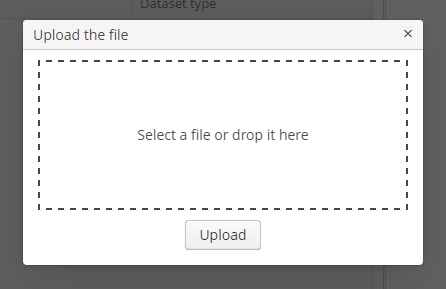

3.6.3.1. 对�框消�
|
对 v.7.0 之�的新版本 API，请�阅 对�框消�。 |
- 通用对�框
-
通用对�框�以通过
Frame��的showMessageDialog()和showOptionDialog()方法�调用。由�界��制器都��了这个��，所以�以直�在界��制器调用这些方法。-
showMessageDialog()用æ�¥å±•ç¤ºä¸€æ�¡æ¶ˆæ�¯ï¼Œæ¤æ–¹æ³•æœ‰ä¸‹åˆ—å�‚数：-
title– 窗å�£æ ‡é¢˜ -
message- 消æ�¯å†…容。对äº� HTML ç±»å�‹çš„消æ�¯ï¼Œå�¯ä»¥ä½¿ç”¨ HTML æ ‡ç¾æ�¥æ ¼å¼�化消æ�¯å†…容。使用 HTML 时，确ä¿�对数æ�®åº“å�–出的数æ�®è¿›è¡Œè½¬ä¹‰ä¿�护，é�¿å…� web 客户端进行代ç �注入。在é�� HTML æ ¼å¼�的消æ�¯ä¸å�¯ä»¥ä½¿ç”¨\næ�¥æ�¢è¡Œã€‚ -
messageType– 消�类�。�能的类�：-
CONFIRMATION�CONFIRMATION_HTML– 确认窗�。 -
WARNINGã€�WARNING_HTML– è¦å‘Šçª—å�£æ¶ˆæ�¯ç±»å�‹çš„ä¸�å�Œå�ªå��æ˜ åœ¨æ¡Œé�¢å®¢æˆ·ç«¯ã€‚
也�以通过�数设置消�类�：
-
width- 窗�宽度。 -
modal- 窗�是�模�弹出。 -
maximized- 对�框是�最大化到整个界�。 -
closeOnClickOutside- 对è¯�框是å�¦å�¯ä»¥é€šè¿‡ç‚¹å‡»ç•Œé�¢å¯¹è¯�框外é�¢çš„部分进行关é—。显示对è¯�框消æ�¯ç¤ºä¾‹ï¼š
showMessageDialog("Warning", "Something is wrong", MessageType.WARNING.modal(true).closeOnClickOutside(true));
-
-
-
-
showOptionDialog()用æ�¥å±•ç¤ºæ¶ˆæ�¯ä»¥å�Šä¸€äº›ç”¨æˆ·å�¯ä»¥æ“�作的按钮。除了上é�¢æ��到的showMessageDialog()çš„å�‚数外，这个方法还å�¯ä»¥æ�¥æ”¶ä¸€ä¸ª action 的数组或者列表，并且会为æ¯�个 action 创建一个按钮。当按钮点击å��，窗å�£è°ƒç”¨ç›¸åº”æ“�作的actionPerform()方法然å��å…³é—。对äº�é‡‡ç”¨æ ‡å‡†å��ç§°å’Œå›¾æ ‡çš„æŒ‰é’®æ�¥è¯´ï¼Œä½¿ç”¨åŒ¿å��类继承
DialogAction很方便，支æŒ�使用DialogAction.Typeæ�šä¸¾ç±»å�‹å®šä¹‰çš„五ç§�动作：OKã€�CANCELã€�YESã€�NOã€�CLOSE。相应的按钮å��称ä»�主è¯è¨€åŒ…ä¸å�–得。下é�¢è¿™ä¸ªä¾‹å�是一个有
Yeså’ŒNo按钮的消æ�¯å¯¹è¯�框，并且ä»�è¯è¨€åŒ…ä¸è�·å�–到当å‰�ç•Œé�¢çš„æ ‡é¢˜å’Œæ¶ˆæ�¯æ–‡æœ¬ï¼šshowOptionDialog( getMessage("confirmCopy.title"), getMessage("confirmCopy.msg"), MessageType.CONFIRMATION, new Action[] { new DialogAction(DialogAction.Type.YES, Status.PRIMARY).withHandler(e -> copySettings()), new DialogAction(DialogAction.Type.NO, Status.NORMAL) } );DialogActionçš„Statuså�‚数用æ�¥ç»™åŠ¨ä½œçš„æŒ‰é’®è®¾ç½®ç‰¹æ®Šçš„æ˜¾ç¤ºæ ·å¼�。Status.PRIMARY会使相应的按钮高亮并且被选ä¸ã€‚Statuså�‚数也å�¯ä»¥çœ�å�»ï¼Œè¿™æ ·çš„è¯�ä¼šé»˜è®¤çš„é«˜äº®æ ·å¼�。如æ�œç»™showOptionDialogä¼ é€’äº†å¤šä¸ªStatus.PRIMARYçš„æ“�作，å�ªæœ‰ç¬¬ä¸€ä¸ªåŠ¨ä½œçš„按钮会被设置æˆ�cuba-primary-actionæ ·å¼�并且被选ä¸ã€‚
-
- æ–‡ä»¶ä¸Šä¼ å¯¹è¯�框
-
使用
FileUploadDialog窗å�£æ�¥æ��ä¾›ä¸Šä¼ æ–‡ä»¶åˆ°ä¸´æ—¶å˜å‚¨çš„基本功能。这个窗å�£åŒ…å�«äº†ä¸€ä¸ªå�¯ä»¥æŠ•æ”¾æ–‡ä»¶çš„区域，å�¯ä»¥é€šè¿‡æ‹–拽的方å¼�ä»�æµ�è§ˆå™¨å¤–å°†æ–‡ä»¶æŠ•æ”¾åˆ°æŒ‡å®šåŒºåŸŸè¿›è¡Œä¸Šä¼ ï¼Œå�Œæ—¶ä¹Ÿæ��ä¾›äº†ä¸€ä¸ªä¸Šä¼ æ–‡ä»¶çš„æŒ‰é’®ã€‚ä¸Šä¼ çª—å�£æ˜¯é€šè¿‡
openWindow()æ–¹æ³•æ‰“å¼€çš„ï¼Œå½“ä¸Šä¼ æˆ�功的时候，窗å�£å…³é—会返å›�COMMIT_ACTION_ID。å�¯ä»¥é€šè¿‡CloseListener或者CloseWithCommitListener监å�¬å™¨æ�¥è·Ÿè¸ªçª—å�£çš„å…³é—动作，然å��用getFileId()å’ŒgetFileName()方法æ�¥å�–åˆ°ä¸Šä¼ æ–‡ä»¶çš„ UUID å’Œå��称。之å��å�¯ä»¥åˆ›å»ºä¸€ä¸ªFileDescriptor对象用æ�¥ä½œä¸ºè¿™ä¸ªæ–‡ä»¶åœ¨æ•°æ�®æ¨¡å�‹å±‚的引用，å�¯ä»¥ç”¨è¿™ä¸ªå¯¹è±¡æ�¥å®�ç�°å…¶å®ƒä¸šåŠ¡é€»è¾‘。FileUploadDialog dialog = (FileUploadDialog) openWindow("fileUploadDialog", OpenType.DIALOG); dialog.addCloseWithCommitListener(() -> { UUID fileId = dialog.getFileId(); String fileName = dialog.getFileName(); FileDescriptor fileDescriptor = fileUploadingAPI.getFileDescriptor(fileId, fileName); // your logic here });
Dialogs 的展示�以使用带 $cuba-window-modal-* �缀的 SCSS ��进行自定义。�以在创建一个 主题扩展 或者一个 自定义主题 之�在�视化编辑器里修改这些��的值。